പ്രാാദേശിിക ചരിിത്രരചനാാമത്സരത്തിിൽ അനു തയ്യാാറാാക്കിിയ പ്രാാദേശിിക ചരിിത്രത്തിിന്റെź ഒരു
ഭാാഗമാണ്് ചുവടെെ നൽകിയിട്ടുുള്ളത്.
ചരിിത്രത്തിിന്റെź
ആധാാര ശിിലകൾ
12
തിരുവനന്തപുുരം നഗരത്തിിൽ
നിന്ന്് 15 കിലോോമീറ്റർ തെ�ക്കുു
മാറി സ്ഥിിതി ചെ�യ്യുുന്ന പ്രദേ
ശമാാണ്് വിഴിിഞ്ഞംം. പ്രാാചീ
നകാാലം മുതൽക്ക് തന്നെ�
ചരിിത്രപരവുംം�
വാണിജ്യയപരവുുമായ പ്രാാധാാന്യംം� ഏറെെയുു
ള്ള തീരപ്രദേശമാാണിത്. പ്രാാചീന തമിഴ
കത്തെ� സുുപ്രധാാന കേ�ന്ദ്രങ്ങളിിൽ ഒന്നാ
യിരുന്നു വിഴിിഞ്ഞംം എന്ന്് സംഘകാല
സാഹിിത്യകൃതികളിിൽ പരാാമർശിിക്കുന്നു.
ഒരു തുറമുുഖംം എന്ന നിലയിലുംം�
വ്യാാ�പാര കേ�ന്ദ്രം എന്ന നിലയിലുംം� ഈ
പ്രദേശം ദക്ഷിിണേ�ന്ത്യൻ രാഷ്ട്രീീയ സാമൂഹിിക
സാമ്പത്തിിക
ചരിിത്രത്തിിന്റെź
ഭാാഗ
മാണ്്. സി.ഇ. 9-10 നൂറ്റാണ്ടുുകളിിൽ
ദക്ഷിിണേ�ന്ത്യയിലെെ ആയ് രാജവംംശ
ത്തിിന്റെź കേ�ന്ദ്രമായിരുന്നു വിഴിിഞ്ഞംം എന്ന്്
ശിിലാലിഖിതങ്ങളും�ം മറ്റു ചരിിത്ര രേ�ഖ
കളും�ം സൂചിപ്പിിക്കുന്നു. ലീലാതിലക
ത്തിിന്റെź വ്യാാ�ഖ്യാാ�നത്തിിൽ ആറ്റൂർ കൃഷ്ണ
പിഷാാരടിി, പാണ്ഡ്യയന്മാാരാൽ പരാാജിതരായ
ആയ് കുടും�ംബംം ആയ്ക്കുുടി ഉപേ�ക്ഷിിച്ചുു
വിഴിിഞ്ഞത്തേ�ക്ക്
്
കുടിയേ�റിിയതായി
രേ�ഖപ്പെ�ടുുത്തിിയിരിിക്കുന്നു. ഉദ്യോോ�തന
സൂരിി എന്ന ജൈൈനമുുനി രചിിച്ച ‘കുവല
യമാല’ എന്ന കൃതിയിൽ വിഴിിഞ്ഞത്തെ�
‘വിജയപുുരിി’ എന്ന്് പരാാമർശിിച്ചിരിിക്കുന്നു.
പാണ്ഡ്യയരാജാവായ നെ�ടു
ുഞ്ചേേĕഴിിയന്റെź
ശാസനത്തിിൽ ഇവിടുത്തെ� കോ�ോട്ടയെ�പ്പറ്റിി
രേ�ഖപ്പെ�ടുുത്തിിയിട്ടുുണ്ട്.
സംഘകാലഘട്ടത്തിിൽതന്നെ�
വിഴിിഞ്ഞംം
ഒരു സുുപ്രധാാന വാണിജ്യയ തുറമുുഖ
Page 68


Page 69
മുകളിിൽ നൽകിയിരിിക്കുന്ന പ്രാാദേശിിക ചരിിത്രക്കുറിപ്പ് വായിച്ചല്ലോƽോ. ഈ കുറിപ്പ് തയ്യാാ
റാാക്കുന്നതിിന് ഏതെ�ല്ലാംDZ സ്രോǟോതസ്സുുകളെ�യാാണ്് ഉപയോ�ോ
ഗപ്പെ�ടുുത്തിിയിരിിക്കുന്നതെ�
ന്ന്്
കണ്ടെ�ത്താാമോ�ോ?
l
പുുരാവസ്തുു തെ�ളിിവുകൾ
l
ലിഖിതങ്ങൾ
l
സാഹിിത്യകൃതികൾ
l
l
l
l
ഇത്തരത്തിിൽ തെ�ളിിവുകളെ� അടിസ്ഥാനമാാക്കിി ഭൂതകാലത്തെ� ശാസ്ത്രീീയമായി രേ�ഖപ്പെ�ടുു
ത്തുന്ന പഠനശാാഖയാാണ്് ചരിിത്രം. ചരിിത്ര രചനയ്ക്കാവശ്യമായ ഒട്ടേ�റെെ തെ�ളിിവുകൾ ഓരോ�ോ
കാലവുംം� പല രൂപത്തിിൽ അവശേ�ഷിിപ്പിിച്ചിട്ടുുണ്ടാകുംം�. അവ സമാാഹരിിച്ച് ശാസ്ത്രീീയമായി
വിശകലനംം ചെ�യ്ത്് ഭൂതകാലത്തെ� രേ�ഖപ്പെ�ടുുത്തുന്നതാാണ്് ചരിിത്രരചന.
മധ്യകാല ഇന്ത്യയിൽ നിലനിിന്നിരുന്ന വിശാലമായ മുഗൾ-വിജയനഗര രാജ്യയങ്ങളെ�ക്കുുറിച്ചുംം�
അവിടുത്തെ� ഭരണാ
ാധികാരിികളെ�ക്കുുറിച്ചുംം� മുൻ അധ്യാ�ായത്തിിൽ നിങ്ങൾ ചർച്ച ചെ�യ്തല്ലോƽോ.
ഇത്തരത്തിിൽ വിശാലമായ രാജ്യയങ്ങളുടെെയുംം� രാജാക്കന്മാാരുടെെയുംം� ചരിിത്രത്തിിൽ നിന്ന്്
വ്യത്യസ്തമാായി ഒരു ചെ�റിിയ പ്രദേശത്തിിന്റെźയോ�ോ വ്യക്തിിയുടെെയോ�ോ സംഭവത്തിിന്റെźയോ�ോ
സൂക്ഷ്മവുംം� സമഗ്രവുമായ രേ�ഖപ്പെ�ടുുത്തലാാണ്് പ്രാാദേശിിക ചരിിത്രം.
കേ�ന്ദ്രമായിരുന്നു എന്ന്് വിദേശ സഞ്ചാര
സാഹിിത്യ കൃതിയായ ‘പെ�രിിപ്ലസ് ഓഫ്്
ദി എറീത്രിയൻ സീ’ എന്ന ഗ്രന്ഥത്തിിൽ
രേ�ഖപ്പെ�ടുുത്തിിയിരിിക്കുന്നു.
കേ�രള സർവകലാശാല പുുരാവസ്തുുവകുപ്പ്
നടത്തിിയ ഉദ്ഖനന
ങ്ങളിിൽ ഈ പ്രദേശ
ത്തിിന്റെź സമീീപത്തായി നിലനിിന്നിരുന്ന
കോ�ോട്ടയുുടെെ അവശിിഷ്ടങ്ങൾ കണ്ടെ�ത്തിി
യിട്ടുുണ്ട്. ‘കോ�ോട്ടപ്പുുറം’ എന്ന സ്ഥലനാാമം
ഇപ്പോ�ോഴും�ം വിഴിിഞ്ഞത്തിിന് സമീീപത്തുണ്ട്.
ചൈൈനീീസ് നിർമ്മിിതവുംം� റോ�ോമൻ നിർമ്മിിത
വുമായ പാത്രങ്ങളുടെെയുംം� മറ്റ് വസ്തുുക്കളുുടെെ
യുംം� അവശിിഷ്ടങ്ങൾ, റോ�ോമൻ നാാണയങ്ങൾ
എന്നിവ ഇവിടെെനിന്ന്് ലഭിിച്ചിട്ടുുണ്ട്. ഈ
പുുരാവസ്തുു തെ�ളിിവുകൾ പ്രാാചീനകാാലത്തെ�
വിദേശ വ്യാാ�പാര ബന്ധത്തിിന്റെź സൂചന
കളായി കണക്കാക്കാംം.
ഇവിടെെ സ്ഥിിതിചെ�യ്യുുന്ന പ്രാാചീന ഗുഹാ
ക്ഷേ�ത്രംം ഈ പ്രദേശത്തിിന്റെź പൗരാണികത
വ്യക്തമാാക്കുന്നു. വിവിധ ജാതിമത വിഭാാഗ
ങ്ങളിിൽപ്പെ�ട്ടവർ സഹിിഷ്ണുതയോ�ോടെെ വസി
ക്കുന്ന ഈ പ്രദേശത്ത് വ്യത്യസ്ത മതസ്ഥരുു
ടെെ ധാാരാളം ആരാധനാാലയങ്ങൾ കാണാംം.
പ്രാാചീന തുറമുുഖമാായിരുന്ന വിഴിിഞ്ഞംം
ഇന്ന്് ആധുനിക സൗകര്യങ്ങളുള്ള ഒരു
തുറമുുഖ കേ�ന്ദ്രമായി മാറിയിരിിക്കുന്നു.
181
ചരിിത്രത്തിിന്റെź ആധാാര ശിിലകൾ
Page 70

ചരിിത്രം
പ്രാാദേശിിക ചരിിത്രം
വിശാലമായ പ്രദേശത്തിിന്റെźയോ�ോ നാാടിന്റെź
യോ�ോ രാജ്യയത്തിിന്റെźയോ�ോ സംഭവങ്ങളുടെെയോ�ോ
ചരിിത്രം രേ�ഖപ്പെ�ടുുത്തുന്നു.
ലോോക ചരിിത്രം, രാജ്യയ ചരിിത്രം, പ്രവിിശ്യാാ�
ചരിിത്രം എന്നിവയിൽ നിന്ന്് വ്യത്യസ്തമാായി
ചെ�റിിയ ഭൂപ്രദേശത്തിിന്റെźയോ�ോ വിഷയങ്ങ
ളുടെെയോ�ോ സംഭവങ്ങളുടെെയോ�ോ സൂഷ്മമായ
ചരിിത്രാന്വേ�േഷണമാാണിത്.
എഴുതപ്പെ�ട്ട രേ�ഖകൾ, പുുരാവസ്തുു
തെ�ളിിവുകൾ, ചരിിത്ര അവശേ�ഷിിപ്പുകൾ
എന്നിവ ഉപയോ�ോ
ഗപ്പെ�ടുുത്തിി ചരിിത്രം
നിർമ്മിിക്കുന്നു.
പ്രാാദേശിിക ആഘോ�ോഷങ്ങളും�ം രുചിശീല
ങ്ങളും�ം ആചാരാനുഷ്ഠാാനങ്ങളും�ം വാമൊ�ൊ
ഴിി
വഴക്കങ്ങളും�ം ചരിിത്ര രചനയുുടെെ
ഭാാഗമാകുന്നു.
ഭൂതകാല സംഭവങ്ങൾ, സംസ്കാാരങ്ങൾ,
സമൂൂഹങ്ങൾ എന്നിവയെ� വിശാലമായ
കാഴ്ചപ്പാടിൽ വിലയിരുത്തുന്നു.
ചരിിത്രത്തെ� ജനാാധിപത്യവൽക്കരിിച്ച് മുഖ്യ
ധാാരാചരിിത്രത്തിിൽ ഇടം കിട്ടാതെ�പോ�ോ
യ
പ്രദേശങ്ങൾക്കുംം� ജനവി
ിഭാാഗങ്ങൾക്കുംം�
സംഭവങ്ങൾക്കുംം� അർഹമാായ പ്രാാതിനിധ്യംം�
നൽകുന്നു.
കൂടുതൽ വിവരങ്ങൾ കണ്ടെ�ത്തിി ‘ചരിിത്രവുംം� പ്രാാദേശിിക ചരിിത്രവുംം�’ എന്ന
വിഷയത്തിിൽ പാനൽ ചർച്ച സംഘടിപ്പിിക്കുക.
ചരിിത്ര സ്രോǟോതസ്സുുകൾ
വിവിധങ്ങളായ തെ�ളിിവുകളെ� അടിസ്ഥാനപ്പെ�ടുുത്തിിയാണ്് ചരിിത്രരചന നിർവഹിിക്കുന്നത്്
എന്ന്് നിങ്ങൾ കണ്ടല്ലോƽോ. ചരിിത്രത്തെ�ക്കുുറിച്ച് നമുുക്ക് വിവരം നൽകുന്ന എന്തിനെ�യുംം�
ചരിിത്രരചനയ്ക്കുുള്ള സ്രോǟോതസ്സുുകൾ എന്ന്് വിളിിക്കാംം. നിശ്ചിിത കാലഘട്ടവുുമായി ബന്ധ
പ്പെ�ട്ടതുംം� ഉപയുുക്തമാായ വിവരങ്ങൾ നമുുക്ക് നൽകുന്നതുുമായ ഏതൊ�ൊരുു വസ്തുുവുംം� ഒരു
ചരിിത്ര സ്രോǟോതസ്സാണ്്.
ചരിിത്രരചനയ്ക്ക് പ്രയോ�ോജന
കരമാായ പ്രധാാന സ്രോǟോതസ്സുുകളെ� നമുുക്ക് പരിിചയപ്പെ�ടാംDZ.
പുുരാവസ്തുുക്കൾ
സ്മാരകങ്ങൾ
സാഹിിത്യകൃതികൾ
സഞ്ചാരക്കുറിപ്പുകൾ
പത്രങ്ങൾ
ഔദ്യോോ�ഗിക രേ�ഖകൾ
ചരിിത്ര
സ്രോǟോതസ്സുുകൾ
പുുരാവസ്തുുശാസ്ത്രപരമാായ സ്രോǟോതസ്സുുകൾ
182
സാാമൂൂഹ്യയശാാസ്ത്രംം
- ഭാാഗംം 2
VII
Page 71
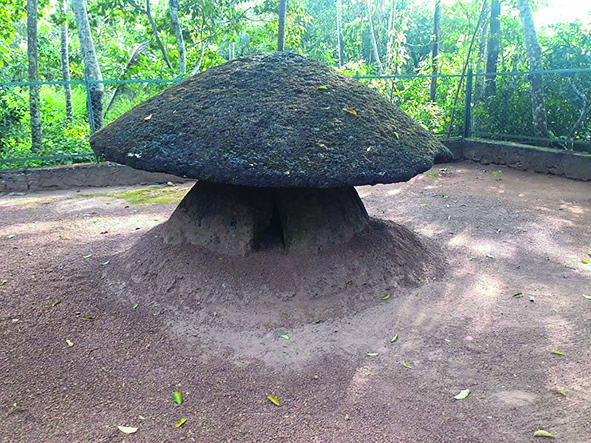
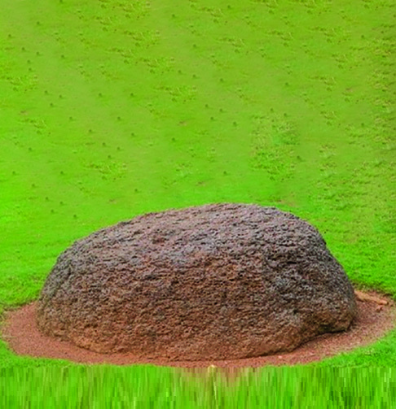
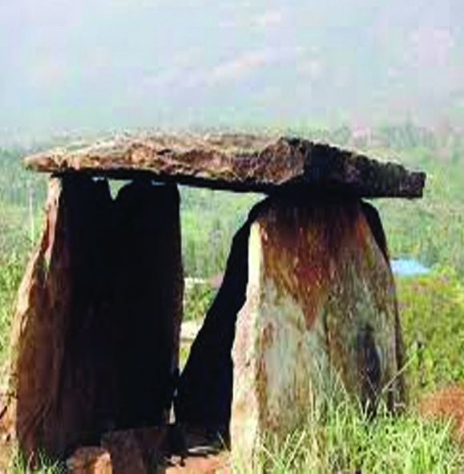
പുുരാവസ്തുുശാസ്ത്രപരമാായ സ്രോǟോതസ്സുുകൾ
പുുരാവസ്തുുശാസ്ത്രപരമാ
ായ സ്രോǟോതസ്സുുകൾ അവ നിർമ്മിിക്കപ്പെ�ട്ട
കാലഘട്ടത്തിിലെെ ജീവിത
ത്തെ�ക്കുുറിച്ച് വിവരങ്ങളോ�ോ തെ�ളിിവുകളോ�ോ നൽകുന്നവയാണ്്. അവയിൽ പ്രധാാനപ്പെ�ട്ട
സ്രോǟോതസ്സുുകളെ� നമുുക്ക് പരിിചയപ്പെ�ട്ടാാലോോ.
ശിിലാസ്മാരകങ്ങൾ
നാാണയങ്ങൾ
കൊ�ൊട്ടാാരങ്ങൾ
പുുരാലിഖിതങ്ങൾ
ഗുഹകൾ
പുുരാവസ്തുു
ശാസ്ത്രപരമാ
ായ
സ്രോǟോതസ്സുുകൾ
ശിിലാസ്്മാാരകങ്ങൾ
നമുുക്ക് ചുറ്റും�ം കാണുന്ന ഓരോ�ോ കല്ലിനുംം� ഓരോ�ോ കഥ പറയാാനുണ്ടാകുംം�. വലിയ കല്ലുകൾ
കൊ�ൊണ്ട്് നിർമ്മിിച്ച ധാാരാളം സ്മാരകങ്ങളുടെെ അവശേ�ഷിിപ്പുകൾ നമ്മുടെെ പൂർവികർ ഇവിടെെ
ഉപേ�ക്ഷിിച്ചുുപോ�ോയിിട്ടുുണ്ട്.
തന്നിരിിക്കുന്ന ചിത്രങ്ങൾ ശ്രദ്ധിിക്കുക.
ചിിത്രങ്ങൾ 12.1
കുുടക്കല്ല്്
തൊൊപ്പിിക്കല്ല്്
മുുനിിയറ
കേ�രളത്തിിന്റെź വിവിധ ഭാാഗങ്ങളിിൽ നിന്ന്് കണ്ടെ�ടുുത്ത ചരിിത്രശേ�ഷിിപ്പുകളാണ്് ഈ ശിിലാ
സ്മാരകങ്ങൾ. വലിയ ശിിലകൾ കൊ�ൊണ്ട്് നിർമ്മിിച്ചതിിനാാൽ ഇവയെ� മഹാശിിലാസ്മാര
കങ്ങൾ എന്നാണ്് വിളിിക്കുന്നത്്. പുുരാതന മനുഷ്യർ നിർമ്മിിച്ച ഈ സ്മാരകശിിലകൾ
183
ചരിിത്രത്തിിന്റെź ആധാാര ശിിലകൾ
Page 72
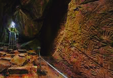

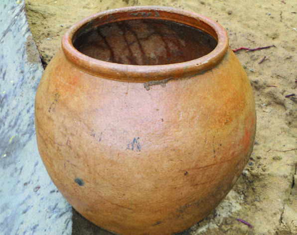
പോ�ോയകാലത്തെ� ചരിി
ത്രം നമ്മോ�ോട്
് പറയു
ു
ന്നുണ്ട്. ഇടുക്കിി ജില്ല
യിലെെ മറയൂൂർ, തൃശ്ശൂൂർ
ജില്ലയിലെെ ചിറമന
ങ്ങാട്, മലപ്പുുറം ജില്ല
യിലെെ തവനൂർ തുട
ങ്ങിയ സ്ഥലങ്ങളിിൽ
നിന്ന്് ഇത്തരത്തിിലു
ള്ള ശിിലാസ്മാരകങ്ങ
ളുടെെ ശേ�ഷിിപ്പുകൾ ലഭിിച്ചിട്ടുുണ്ട്. നമ്മുടെെ പൂർവികരുടെെ ഭൗ�തികാവശിിഷ്ടങ്ങൾ അടക്കംം
ചെ�യ്യാാനാാണ്് ഇവ ഉപയോ�ോഗിിച്ചിരുന്നത്്.
ഗുുഹകൾ
കേ�രളത്തിിന്റെź പ്രാാചീന ചരിിത്രത്തെ�ക്കുുറിച്ച് വെ�ളിിച്ചം വീശുന്നവയാണ്് ഗുഹകൾ. പ്രകൃതിദ
ത്തമാായ ഇത്തരംം ഗുഹകളിിൽ ചരിിത്രാതീതകാലത്തെ� മനുഷ്യ ജീവിതത്തെ� സൂചിപ്പിിക്കുന്ന
ചിത്രങ്ങളും�ം മറ്റും�ം ആലേേഖനംം ചെ�യ്യപ്പെ�ട്ടിിട്ടുുണ്ട്. എടയ്ക്കൽ (വയനാാട്), മറയൂൂർ (ഇടുക്കിി),
ആങ്കോÿോട് (തിരുവനന്തപുുരം), തെ�ന്മല, കോ�ോട്ടുുക്കൽ (കൊ�ൊല്ലം) എന്നിവിടങ്ങളിിൽ ചില
പ്രധാാന ഗുഹകൾ സ്ഥിിതി ചെ�യ്യുുന്നു. ഇത്തരത്തിിൽ കേ�രളത്തിിലെെ ചരിിത്രപ്രാാധാാന്യമുള്ള
പുുരാവസ്തുുക്കളെ�
സംരക്ഷിിക്കുന്നത്് ആർക്കിിയോ�ോളജിിക്കൽ സർവേ� ഓഫ്് ഇന്ത്യയുംം� കേ�രള
ആർക്കിിയോ�ോളജിി വകുപ്പുമാണ്്.
പ്രാാചീന മനുഷ്യർ ഉപയോ�ോ
ഗിച്ചിരുന്ന കേ�രളത്തിിലെെ പ്ര
ധാാനപ്പെ�ട്ട ഗുഹകളിിൽ ഒന്നാ
ണ്് എടയ്ക്കൽ ഗുഹ. വയനാാട്
ജില്ലയിലെെ സുുൽത്താൻബത്തേ�രിിയിൽ
നിന്ന്് 10 കിലോോമീറ്റർ അകലെെയാണ്്
എടയ്ക്കൽ ഗുഹ. ഇവിടുത്തെ� ചുമരുക
ളിിൽ കൊ�ൊ
ത്തിിയിരിിക്കുന്ന ഗുഹാചിത്ര
ങ്ങൾ ശിിലായുഗത്തിിലെെ മനുഷ്യരെെക്കുു
റിച്ചുംം� അവരുടെെ ജീവിതത്തെ�ക്കുുറിച്ചുംം�
വിവരങ്ങൾ നൽകുന്നു.
എടയ്ക്കൽ ഗുുഹ
ചിിത്രം 12.3
നിങ്ങളുടെെ പ്രദേശത്ത് ശിിലാസ്മാരകങ്ങൾ നിലനിിൽക്കുന്നുണ്ടോ�ോ? നിങ്ങൾ
ക്കറിിയാവുന്ന ശിിലാസ്മാരകത്തെ�ക്കുുറിച്ച് ഒരു കുറിപ്പ് തയ്യാാറാാക്കുക.
മഹാശിിലാ കാല
ഘട്ടത്തിിൽ ശവസം
സ്കാാരത്തിിനുപയോ�ോ
ഗിച്ചിരുന്ന വലിയ
കളിിമൺ ഭരണി
ികളാണ്് നന്ന
ങ്ങാടികൾ. ഭൗ�തികാവശിിഷ്ടം
അടക്കംം ചെ�യ്ത്് മണ്ണിിനടിിയിൽ
മൂടുന്ന ഭരണി
ികളാണിവ.
നന്നങ്ങാടികൾ
ചിിത്രം 12.2
184
സാാമൂൂഹ്യയശാാസ്ത്രംം
- ഭാാഗംം 2
VII
Page 73


ചിിത്രം 12.5
പുുരാലിഖിിതങ്ങൾ
ഒരു പ്രതലത്തിിൽ വരച്ചതോ�ോ
കൊ�ൊ
ത്തിിവച്ചതോ�ോ
ആയ സന്ദേദേŭശമോ�ോ
വാചകമോ�ോ ആണ്്
ലിഖിതങ്ങൾ. വ്യത്യസ്ത പ്രതലങ്ങളിിലാണ്് ലിഖിതങ്ങൾ രേ�ഖപ്പെ�ടുുത്തിിയിരിിക്കുന്നത്്.
ചിിത്രങ്ങൾ 12.4
ശിിലകൾ
ഓലകൾ
ലോോഹത്തകിിടുകൾ
പുുരാലിഖിതങ്ങൾ
ഇത്തരത്തിിൽ കേ�രളത്തിിലങ്ങോ�ോളമിിങ്ങോ�ോളംം ധാാരാളം
ലിഖിതങ്ങൾ കണ്ടെ�ടുുത്തിിട്ടുുണ്ട്. തരിിസാപ്പള്ളി
ി
ലിഖിതം (കൊ�ൊല്ലം), ജൂത ശാസനംം (മട്ടാഞ്ചേേĕരിി),
പാലിയം ശാസനംം (ആലപ്പുുഴ) എന്നിവ കേ�രള
ത്തിിലെെ പ്രധാാന ലിഖിതങ്ങളാണ്്. കേ�രളത്തിിൽ
പുുരാലിഖിതങ്ങളുടെെ ശേ�ഖരണവുംം� സംരക്ഷണവുംം�
കേ�രള ആർക്കൈൈവ്്സ്് വകുപ്പാണ്് നിർവഹിിക്കുന്നത്്.
നിങ്ങളുടെെ വിദ്യാ�ാലയത്തിിലെെ ശിിലാഫലകംം ശ്രദ്ധിിക്കൂ. നിങ്ങളുടെെ സമീീ
പത്തുള്ള പൊ�ൊതു
ുകെ�ട്ടിിടങ്ങളിിലുംം� ആരാധനാാലയങ്ങളിിലുംം� ഇത്തരത്തിിലു
ള്ള ശിിലാഫലകങ്ങൾ കണ്ടിട്ടുുണ്ടാകുമല്ലോƽോ. ശിിലാഫലകത്തിിൽ നിന്നുംം�
ആ സ്ഥാപനത്തിിന്റെź ചരിിത്രരചനയ്ക്ക് സഹാ
ായകരമാായ എന്തെ�ല്ലാംDZ വിവരങ്ങ
ളാണ്് ലഭിിക്കുക?
ലിഖിിതപഠനം
(Epigraphy)
ശിിലകൾ, ലോോഹത്തകിിടുകൾ,
ഓലകൾ തുടങ്ങിയവയിലെെ എഴുത്തുകളെ�
ക്കുറിച്ചുുള്ള പഠനമാാണ്് ലിഖിതപഠനം.
185
ചരിിത്രത്തിിന്റെź ആധാാര ശിിലകൾ
Page 74

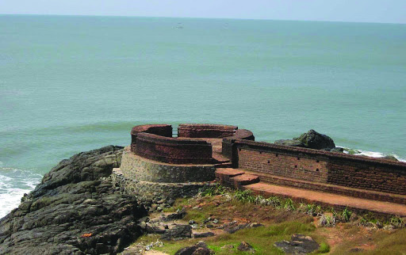
കോ�ോട്ടകളും�ം കൊ�ൊട്ടാാരങ്ങളും�ം
രാജ്യയസുുരക്ഷ,
സൈൈനിികാവശ്യങ്ങൾ,
വ്യാാ�പാരം എന്നിവയ്ക്കായി നിർമ്മിിച്ചിരുന്ന കോ�ോട്ട
കളെ� ചരിിത്ര രചനയ്ക്കുുള്ള പ്രധാാന സ്രോǟോതസ്സുു
കളായി പ്രയോ�ോജനപ്പെ�ടു
ുത്താംം. കേ�രളത്തിിലെെ
വ്യത്യസ്ത കാലഘട്ടങ്ങളെ�ക്കുുറിച്ചുംം� ഭരണാ
ാധി
കാരിികളെ�ക്കുുറിച്ചുംം� കോ�ോട്ടകൾ നമുുക്ക് വിവരം
നൽകുന്നു. ബേ�ക്കൽ കോ�ോട്ട, കണ്ണൂർ കോ�ോട്ട,
പാലക്കാാട് കോ�ോട്ട, അഞ്ചുതെ�ങ്ങ്് കോ�ോട്ട തുട
ങ്ങിയവ കേ�രളത്തിിലെെ പ്രധാാന കോ�ോട്ടകളാണ്്.
നിങ്ങളുടെെ നാാട്ടിൽ ഇതുപോ�ോലുുള്ള കോ�ോട്ടകൾ
നിലവിലുണ്ടോ�ോ?
കോ�ോട്ടകളെ�പ്പോ�ോലെെ
തന്നെ�
ചരിിത്രപ്രാാധാാന്യമു
ള്ളതാണ്് കൊ�ൊട്ടാാരങ്ങൾ. കേ�രളത്തിിലെെ ചില
പ്രധാാന കൊ�ൊട്ടാാരങ്ങളുടെെ പേ�രുുകൾ ചുവടെെ
നൽകുന്നു. നിങ്ങൾക്കറിിയാവുന്ന കൊ�ൊട്ടാാര
ങ്ങൾ ഉൾപ്പെ�ടുുത്തിി പട്ടിക വിപുുലപ്പെ�ടുുത്തൂ.
l
പത്മനാാഭപുുരം കൊ�ൊട്ടാാരം
l
മട്ടാഞ്ചേേĕരിി പാലസ്്
l
കിളിിമാനൂർ കൊ�ൊട്ടാാരം
l
അറയ്ക്കൽ കൊ�ൊട്ടാാരം
l
കൃഷ്ണപുുരം കൊ�ൊട്ടാാരം
l
l
നിങ്ങളുടെെ ജില്ലയിലുംം� കോ�ോട്ടകളോ�ോ കൊ�ൊട്ടാാരങ്ങളോ�ോ ഉണ്ടാകുമല്ലോƽോ? അവ
യെ�ക്കുുറിച്ച് ഒരു ലഘു ചരിിത്രവിവരണം
ം തയ്യാാറാാക്കുക.
നാണയങ്ങൾ
നാാണയങ്ങൾ പ്രധാാന ചരിിത്ര സ്രോǟോതസ്സുുകളാണ്്. നിർമ്മിിക്കപ്പെ�ട്ട
കാലഘട്ടത്തിിലെെ
സാമ്പത്തിിക, രാഷ്ട്രീീയ, സാംംസ്കാാരിിക ചരിിത്രത്തെ�ക്കുുറിച്ച് അവ നമുുക്ക് അറിവ് നൽകുന്നു.
നാാണയങ്ങളെ�ക്കുുറിച്ചുുള്ള പഠനത്തിിന് നാാണയശാസ്ത്രം (Numismatics) എന്നാണ്് പറയുുന്നത്്.
കേ�രളത്തിിന്റെź വിവിധ ഭാാഗങ്ങളിിൽ നിന്ന്് ലഭിിച്ച നാാണയങ്ങളുടെെ ചിത്രങ്ങളാണ്് ചുവടെെ
കാണുന്നത്്. കാശ്, അച്ച്, പണം
ം, അനന്തരായൻ പണം
ം, സുുൽത്താൻ കാശ് തുടങ്ങിയ
പേ�രുുകളിിൽ അവ അറിയപ്പെ�ടുുന്നു. വിവിധ കാലങ്ങളിിൽ പുുറത്തിിറങ്ങിയ ഈ നാാണയ
ബേേക്കൽ കോ�ോട്ട
17-ാംDZ നൂറ്റാണ്ടിൽ നിർമ്മിിച്ച,
കേ�രളത്തിിലെെ
ഏറ്റവുംം�
വലിയ കോ�ോട്ടയാായ ബേ�ക്കൽ
കോ�ോട്ട, കാസർഗോ�ോഡ്് ജില്ലയിൽ പള്ളി
ക്കര വില്ലേേƽജിൽ സ്ഥിിതിചെ�യ്യുുന്നു. ഈ
കോ�ോട്ടയ്ക്കുുള്ളിൽ ആയുധപ്പുരകൾ, കട
ലിലേേക്ക് തുറന്നിരിിക്കുന്ന കിളിിവാതി
ലുകൾ, കടൽവഴിിവരുന്ന ശത്രുക്കളെ�
നേ�രിിടാനുള്ള ഇടങ്ങൾ, രഹസ്യ
യഭൂഗർഭ
അറകൾ, ഒളിിത്താവളങ്ങൾ, ജലസം
ംഭ
രണി
ി എന്നിവയുണ്ട്.
ചിിത്രം 12.6
186
സാാമൂൂഹ്യയശാാസ്ത്രംം
- ഭാാഗംം 2
VII
Page 75
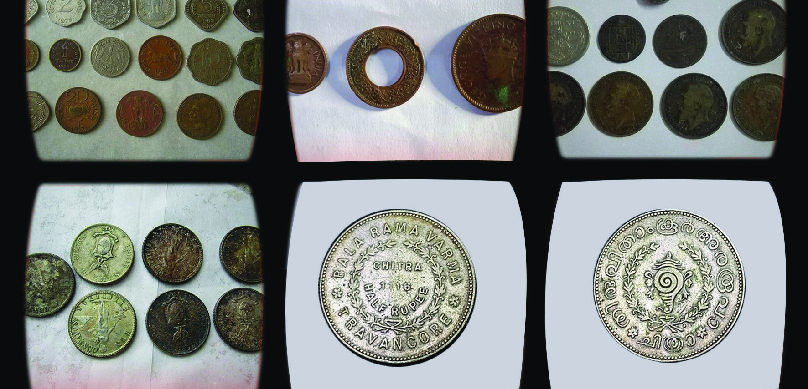

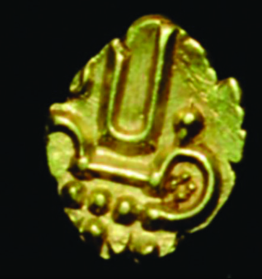

ങ്ങളിിൽ നിന്ന്് നമുുക്ക് എന്തൊ�ൊക്കെ�
കാര്യങ്ങൾ വായിച്ചെ�ടുുക്കാൻ കഴിിയുംം�?
l
നാാണയംം നിർമ്മിിക്കപ്പെ�ട്ട
കാലഘട്ടം
l
നാാണയംം പുുറത്തിിറക്കിിയ ഭരണാ
ാധികാരിികൾ
l
l
l
ചിിത്രങ്ങൾ 12.7
വീരരാായൻ പണം
ം
കോ�ോഴിിക്കോ�ോട്് ഭരിിച്ചിരുന്ന സാമൂതിരിിമാരുടെെ കാലത്ത്്
പ്രചാാരത്തിിലിരുന്ന നാാണയമാണ്് വീരരാായൻ പണം
ം.
പഴയ വീരരാായൻ, പുുതിയ വീരരാായൻ എന്നീ രണ്ട് വിധത്തിിൽ
നാാണയങ്ങൾ നിലവിലുണ്ടായിരുന്നു. 1667–മുതൽക്കാണ്് ഈ
നാാണയങ്ങൾ അടിച്ചിറക്കാൻ തുടങ്ങിയത്. സ്വവർണത്തിിൽ
നിർമ്മിിച്ച ഈ നാാണയത്തെ� വിദേശീയർ ‘പൊ�ൊ
ൻപണം
ം’
എന്നാണ്് വിളിിച്ചിരുന്നത്്. വൈൈഷ്ണവർ ഉപയോ�ോഗിിച്ചിരുന്ന നാാമകുറി, സൂര്യന്റെź അടയാളം,
സിംം�ഹത്തിിന്റെź അടയാളം തുടങ്ങിയവ ഇതിൽ കാണാവുന്നതാാണ്്.
‘പുുരാവസ്തുുശാസ്ത്രപരമാ
ായ സ്രോǟോതസ്സുുകൾ’ എന്ന വിഷയത്തെ� അടിസ്ഥാന
മാക്കിി ക്ലാാസിൽ സെ�മിിനാാർ സംഘടിപ്പിിക്കുക.
187
ചരിിത്രത്തിിന്റെź ആധാാര ശിിലകൾ
Page 76

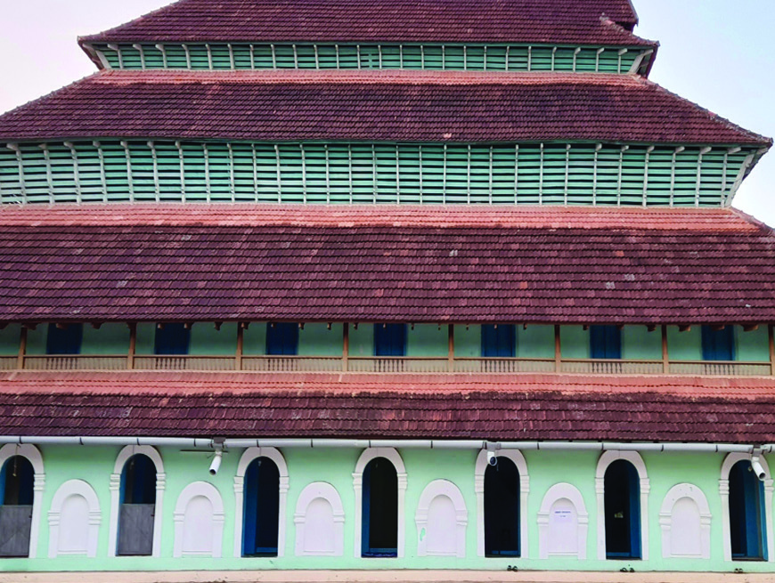

ചരിിത്ര സ്്മാാരകങ്ങൾ
താഴെെ കൊ�ൊടുുത്തിിരിിക്കുന്ന ചിത്രങ്ങൾ ശ്രദ്ധിിക്കുക. ഓരോ�ോ പ്രദേശത്തിിന്റെźയുംം� സാമ്പത്തിിക
സാംംസ്കാാരിിക ചരിിത്രത്തിിലേേക്ക് നമ്മെ�
നയിിക്കുന്ന സ്രോǟോതസ്സുുകളാണിവ.
ചിിത്രങ്ങൾ 12.9
തളിി ക്ഷേäത്രം
മിശ്്കാാൽ പള്ളിി
ദേേവമാാതാാ കത്തീീഡ്രൽ
കടൽപ്പാാലംം
കോ�ോഴിിക്കോ�ോട്ടെെ ചില ചരിിത്രസ്മാരകങ്ങളുടെെ ചിത്രങ്ങളാണിവ. സാമൂതിരിിയുടെെ കാല
ത്ത് പ്രസി
ിദ്ധമാായ രേ�വതി പട്ടത്താനം എന്ന പണ്ഡിതസദസ്സ് നടത്തിിയിരുന്നത്് തളിി
ക്ഷേ�ത്രത്തിിൽ വച്ചായിരുന്നു. പോ�ോർച്ചുുഗീസുുകാർക്കെ�തിിരെെയുുള്ള സാമൂതിരിിയുടെെ പ്രധാാന
യുദ്ധകേ�
ന്ദ്രമായിരുന്നു മിശ്കാൽ പള്ളി. കോ�ോഴിിക്കോ�ോട്ടെെ പോ�ോർച്ചുുഗീസ് സാന്നിധ്യത്തിിന്റെź
സ്മാരകമാണ്് 1513-ൽ നിർമ്മിിച്ച ദേവമാതാ കത്തീഡ്രൽ. കടൽ പാലങ്ങൾ നൂറ്റാണ്ടുുക
ളായി വിവിധ വിദേശ രാജ്യയങ്ങളുമായി കോ�ോഴിിക്കോ�ോടിിനുണ്ടായിരുന്ന വ്യാാ�പാരബ
ന്ധത്തിിന്
തെ�ളിിവാണ്്.
ഇങ്ങനെ� കേ�രളത്തിിലുടനീീളം ധാാരാളം സ്മാരകങ്ങൾ കാണാംം. ഇത്തരംം ചരിിത്രസ്മാരക
ങ്ങൾ ഓരോ�ോന്നുംം� പോ�ോയകാലത്തിിന്റെź ചരിിത്രം നമ്മോ�ോട്
് പറയുംം�.
188
സാാമൂൂഹ്യയശാാസ്ത്രംം
- ഭാാഗംം 2
VII
Page 77

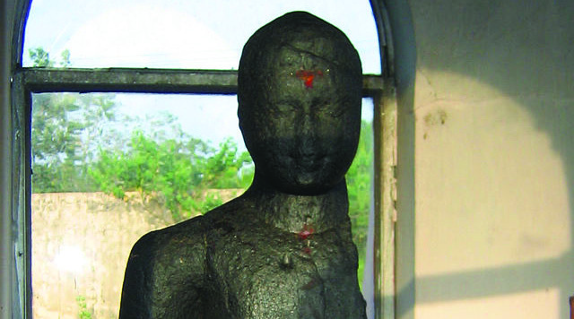
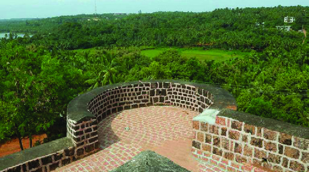
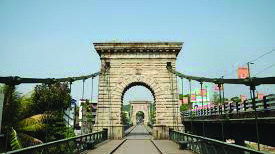
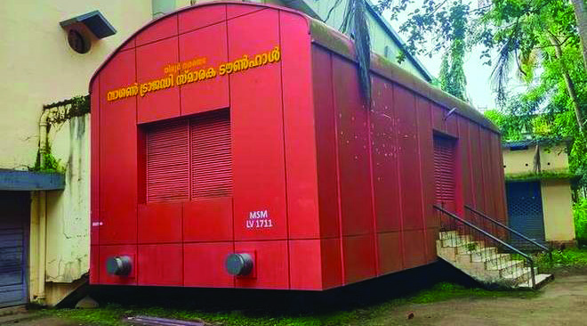

സംഘസാഹിത്യകൃതികൾ
കേ�രളത്തിിന്റെź പ്രാാചീനചരിിത്രത്തെ�ക്കുുറി
ച്ച് വെ�ളിിച്ചം വീശുന്ന സാഹിിത്യ സ്രോǟോത
സ്സുുകളാണ്് തമിഴിിൽ രചിിക്കപ്പെ�ട്ട
സംഘസാഹിിത്യ
കൃതികൾ. പതിിറ്റുപ്പത്ത്
്, പുുറനാാനൂറ്, അകനാാനൂറ്,
കുറും�ംതൊ�ൊകൈൈ, നറ്റിനൈൈ തുടങ്ങിയവ പ്രധാാന
സംഘസാഹിിത്യ കൃതികളാണ്്.
കരുമാടിക്കുട്ടൻ സ്മാരകംം
പുുനലൂൂർ തൂക്കുപാലം
സിനഗോ�ോഗ്്
ചന്ദ്രഗിരിിക്കോ�ോട്ട
വാഗൺ ട്രാാജഡി
ി സ്മാരകംം
ചരിിത്രസ്്മാാരകങ്ങൾ
ജില്ലകൾ
കണ്ടെ�ത്തിി എഴുതൂ
സാഹിത്യസ്രോǟോതസ്സുുകൾ
ലഭ്യമായ ചരിിത്രരചനാാ സ്രോǟോതസ്സുുകളിിൽ പ്രധാാനപ്പെ�ട്ട ഒന്നാണ്് സാഹിിത്യസ്രോǟോതസ്സുുകൾ.
വ്യത്യസ്ത പ്രമേ�
യമുള്ള നിരവധി സാഹിിത്യകൃതികൾ ചരിിത്രത്തിിന്റെź പുുനർനിർമ്മാണത്തിിൽ
നമ്മെ�
സഹാ
ായിക്കുന്നവയാണ്്.
‘കടൽ മകളായ കന്യക ഈ നഗരത്തിിൽ വാസ
മുറപ്പിിച്ചതുുകൊ�ൊണ്ടാാണത്രേ�, കടലമ്മ ദ്വീീ�പാന്തരങ്ങ
ളിിൽ നിന്ന്് രത്നങ്ങളൊ�ൊക്കെ�
ചുമന്നുകൊ�ൊ
ണ്ടുു വരുന്ന
കപ്പലുുകളെ� തിരമാാലകൾ കൊ�ൊണ്ട്് തട്ടിത്തട്ടിി
കോ�ോഴിിക്കോ�ോട്ട്് എത്തിിച്ചിരുന്നത്്.’
-കോ�ോകില സന്ദേദേŭശം.
പതിിനഞ്ചാംം നൂറ്റാണ്ടിൽ ഉദ്ദണ്ഡ
ശാസ്ത്രികൾ രചിിച്ച ‘കോ�ോകിലസ
ദേŭശ’മെെന്ന സംസ്കൃത സന്ദേദേŭശ
കാവ്യത്തിിൽ കോ�ോഴിിക്കോ�ോടിിനെ�
കുറിച്ചെ�ഴുുതിയ ഒരു ശ്ലോnjോകത്തിി
ന്റെź ആശയംം വായിച്ചുുനോ�ോക്കൂൂ.
ചിിത്രങ്ങൾ 12.10
189
ചരിിത്രത്തിിന്റെź ആധാാര ശിിലകൾ
Page 78
ഇതുപോ�ോലെെ വിവിധ ഭാാഷകളിിലായി വിവിധ കാലഘട്ടത്തിിൽ രചിിക്കപ്പെ�ട്ട
ധാാരാളം സാഹിി
ത്യകൃതികൾ നമുുക്ക് ലഭ്യമാണ്്. ഈ കൃതികൾ രചിിക്കപ്പെ�ട്ട
കാലത്തിിന്റെź ചരിിത്രം മനസ്സി
ലാക്കാൻ നമ്മെ�
സഹാ
ായിക്കുന്നു. ഉദാഹരണ
ത്തിിന് 12-15 നൂറ്റാണ്ടുുകളിിൽ രചിിക്കപ്പെ�ട്ട
‘മണിപ്രവാാള കൃതികൾ’ ആ കാലഘട്ടത്തിിലെെ നാാടുവാഴിി വ്യവസ്ഥയെ�ക്കു
ുറിച്ചുംം� സംസ്കാാ
രത്തെ�ക്കു
ുറിച്ചുംം� നമുുക്ക് വിവരം നൽകുന്നു. മലബാാറിൽ നിന്നുള്ള ‘വടക്കൻ പാട്ടുുകൾ’
മധ്യകാല ചരിിത്രത്തിിലെെ സാധാാരണ
മനുഷ്യരുടെെ ജീവിതത്തിിലേേക്ക് വെ�ളിിച്ചം വീശുന്നു.
പത്തൊ�ൊ
മ്പതാംം നൂറ്റാണ്ടിൽ ചന്തുമേ�നോ�ോൻ രചിിച്ച ‘ഇന്ദുലേേഖ’ മലബാാറിലെെ സാമൂഹ്യ
ചരിിത്രത്തെ�ക്കുുറിച്ച് മനസ്സിലാക്കാൻ സഹാ
ായിക്കുന്നു.
സഞ്ചാാരക്കുറിിപ്പുുകൾ
‘ലോോകത്തിിന്റെź എല്ലാ കോ�ോണുുകളിിൽ നിന്നുംം� കച്ചവടക്കപ്പലുുകൾ ഏറ്റവുംം� വിശിിഷ്ട
ങ്ങളായ സാധനങ്ങളുമായി ഇവിടെെ വരിികയുംം� എളുപ്പത്തിിൽ അവ വിറ്റഴിിക്കുകയുംം�
ചെ�യ്തിിരുന്നു. നഗരത്തിിലെെ രക്ഷാനടപടിികളും�ം നീതിപാലനവുംം� ഏറ്റവുംം� കാര്യക്ഷമ
മായി നടത്തിിവരുന്നു. അതുകൊ�ൊണ്ട്് വിദേശങ്ങളിിൽ നിന്നുംം� ചരക്കുകളുമായിവരുന്ന
വ്യാാ�പാരിികൾക്ക് യാതൊ�ൊരുു ഭയവുമില്ല. കമ്പോ�ോളത്തിിലെെ മുഴുവൻ ഉത്തരവാ
ാദിത്വവവുംം�
രാജാവിനാാണ്്. കമ്പോ�ോളത്തിിലെെത്തിിക്കുന്ന ചരക്കുകളുടെെ നാാൽപ്പതിിലൊൊരുുഭാാഗം
ചുങ്കമായികൊ�ൊടുുക്കണം
ം. ഏതെ�ങ്കിലുംം� വ്യാാ�പാരിി മരണപ്പെ�ടു
ുകയോ�ോ ചരക്കുകൾ കയ
റ്റിയ കപ്പൽ പൊ�ൊ
ളിിഞ്ഞ് അതിലെെ ചരക്കുകൾ തുറമുുഖത്ത് അടുക്കുകയോ�ോ ചെ�യ്താാൽ
ആ ചരക്കുകളെ� സംബന്ധിച്ച് യാതൊ�ൊരുു കൃത്രിമവുംം� ഉണ്ടാകുന്നതല്ല. ഇവിടെെ നിന്ന്്
പ്രധാാനമാായുംം� കയറ്റി അയക്കുന്നത്് കുരുമുളകാാണ്്. ഇവിടുത്തുകാർ സമുുദ്രവ്യാാ�പാ
രത്തിിൽ സമർഥരാണ്്.’
പേർഷ്യയൻ സഞ്ചാാരിിയാായ അബ്ദുുർ റസാഖിിന്റെź സഞ്ചാാരക്കുുറിപ്പിിൽ നിിന്ന്്.
മുകളിിൽ കൊ�ൊടുുത്തിിരിിക്കുന്ന സഞ്ചാരക്കുറിപ്പ് വായിച്ചല്ലോƽോ.
പതിിനഞ്ചാംം നൂറ്റാണ്ടിൽ കോ�ോഴിിക്കോ�ോട്ട്് വന്ന പേ�ർഷ്യൻ സഞ്ചാരിിയായ അബ്ദുുർ റസാ
ാഖ്
കോ�ോഴിിക്കോ�ോട്് തുറമുുഖത്തെ�ക്കു
ുറിച്ച് പറയുുന്ന വിവരണമാാണിത്. എന്തൊ�ൊക്കെ�
കാര്യങ്ങ
ളാണ്് ഈ വിവരണ
ത്തിിൽ നിന്ന്് നിങ്ങൾക്ക് കണ്ടെ�ത്താാനാാവുന്നത്് ?
l
l
l
പ്രാാദേശിിക ചരിിത്ര രചനയിിൽ സുുപ്രധാാന പങ്കുവഹിിക്കുന്നവയാണ്് സഞ്ചാരക്കുറിപ്പുകൾ.
പ്രത്യേ�േ
ക സ്ഥലങ്ങൾ, സംഭവങ്ങൾ, സംസ്കാാരങ്ങൾ എന്നിവയുടെെ നേ�രനുുഭവങ്ങൾ നൽകാൻ
സഞ്ചാരക്കുറിപ്പുകൾക്ക് കഴിിയുന്നു. ഒരു പ്രദേശത്തിിന്റെź ചരിിത്രം, ഭൂമിശാസ്ത്രം, സാമ്പത്തിിക
ഘടന, സാമൂഹിിക ജീവിതം എന്നിവയിലേേക്ക് ഇത് വെ�ളിിച്ചം വീശുന്നു.
190
സാാമൂൂഹ്യയശാാസ്ത്രംം
- ഭാാഗംം 2
VII
Page 79


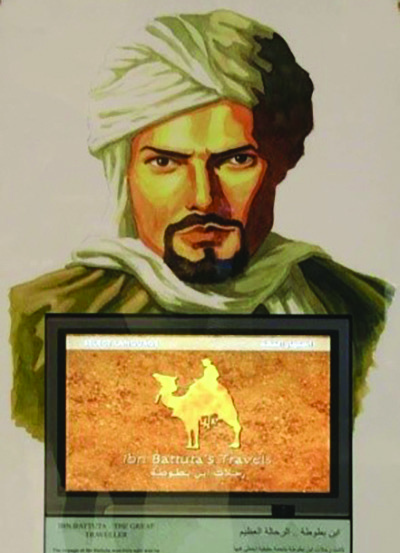
കേ�രളത്തെ�ക്കു
ുറിച്ച് പരാാമർശിിച്ചിട്ടുുള്ള ചില
വിദേശസഞ്ചാരിികൾ
സഞ്ചാാരിി
ദേശം/രാജ്യം�ം
മെെഗസ്തനിിസ്
ഗ്രീസ്
സുുലൈൈമാൻ
പേ�ർഷ്യ
അബ്ദുുർ റസാ
ാഖ്
മാർകോ�ാപോ�ോളോ�ാ
വെ�നീീസ്
ഇബ്നുു ബത്തൂത്ത
മൊ�ാറോ�ാക്കോ�ാ
നിക്കോ�ോളോ�ോ കോ�ോണ്ടിി
വെ�നീീസ്
മാഹ്വാാ�ൻ
ചൈൈന
ബാർബോ�ാസ
പോ�ാർട്ടുുഗൽ
സ്കൂൾ ലൈൈബ്രറിയിൽ നിന്ന്് സഞ്ചാര സാഹിിത്യകൃതികൾ കണ്ടെ�ത്തിി കേ�രള
വുമായി ബന്ധപ്പെ�ട്ട ഭാാഗം വായിച്ച് ക്ലാാസിൽ ചർച്ച സംഘടിപ്പിിക്കുക.
ആത്മകഥകളും�ം ജീവചരിിത്രങ്ങളും�ം
ചരിിത്രരചനയ്ക്ക് ഉപയോ�ോഗിിക്കാവുന്ന സാഹിിത്യസ്രോǟോതസ്സുുകളാണ്് മിക്ക ആത്മകഥകളും�ം
ജീവചരിിത്രങ്ങളും�ം.
“ഞാാൻ ആദ്യമായി ഒരുടുപ്പിിട്ടത്് അമ്പലപ്പുുഴ സ്കൂളിിൽ
പോ�ോയപ്പോ�ോഴാാണ്്. കേ�മ്പിരിിത്തുണികൊ�ൊ
ണ്ടുു രണ്ടുുടുപ്പ്
തയ്പിിച്ചുു... വസ്ത്രങ്ങൾ തേ�യ്ക്കുുന്ന ഏർപ്പാട് ഞങ്ങളുടെെ
നാാട്ടിലന്നിില്ല. നല്ല കഞ്ഞിപ്പശയി
ിൽ നീലം ചേ�ർത്ത്
മുണ്ടുു പിഴിിഞ്ഞുണക്കുംം�. പിന്നീട് ഉരുളൻ തടികൊ�ൊ
ണ്ട് തുണി മടക്കിിത്തല്ലിി ഒതുക്കിിയെ�ടുുക്കുംം�... ആദ്യ
മായി തേ�യ്ച്ച ഷർട്ടിട്ടതുു തിരുവനന്തപുുരം ലാക്കോ�ോ
ളജിിൽ ചേ�ർന്നതിിനു ശേ�ഷമാാണെ�ന്നുു തോ�ോന്നുുന്നു.
സോ�ോപ്പ്് തകഴിിയിൽ അക്കാലത്ത്് അപൂർവവസ്തുുവാണ്്.
തെ�ങ്ങിിൻമടൽ കത്തിിച്ച ചാരം തെ�ളിിയൂറ്റി എടുത്ത്
അതിലാണു മുണ്ട് വെ�ളുുപ്പിിച്ചിരുന്നത്്”.
(അവലംബംം: ആത്മകഥ തകഴിി, പേ�ജ്് 47)
മുകളിിൽ നൽകിയിരിിക്കുന്നതുുപോ�ോലെെയുള്ള ആത്മകഥകളും�ം ജീവചരിിത്രങ്ങളും�ം അത്
എഴുതിയ പ്രദേശത്തിിന്റെź/കാലത്തിിന്റെź വിവിധ മേ�ഖലകളെ�ക്കുുറിച്ച് വിവരങ്ങൾ നൽകു
ന്നവയാണ്്.
ചിിത്രം 12.11
മാാർകോ�ോ പോ�ോളോ�ോ
ചിിത്രം 12.12
ഇബ്നുു ബത്തൂൂത്ത
191
ചരിിത്രത്തിിന്റെź ആധാാര ശിിലകൾ
Page 80

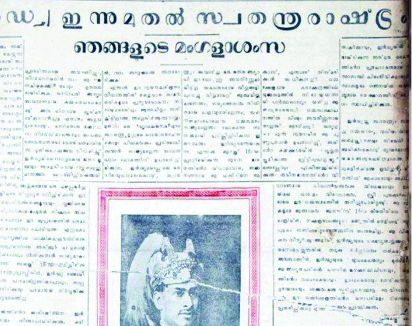
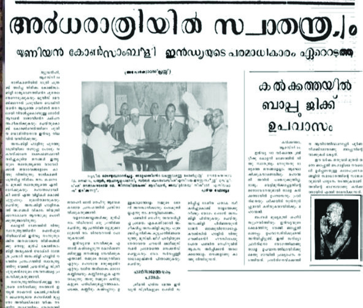
ക്ലാാസ് ലൈൈബ്രറിയിൽ സജ്ജീീകരിിച്ചിരിിക്കുന്ന ആത്മകഥകളും�ം ജീവചരിിത്ര
ങ്ങളും�ം പരിിശോ�ോധിിച്ച് ചരിിത്രരചനയ്ക്ക് സഹാ
ായകമായ ഭാാഗങ്ങൾ കണ്ടെ�ത്തിി
അവതരിിപ്പിിക്കുക.
വർത്തമാാനപത്രങ്ങൾ
ദൈൈനംംദിന സംഭവങ്ങൾ അറിയാൻ
നാാമിന്ന്് പത്രങ്ങൾ, ദൃശ്യമാധ്യമങ്ങൾ
നവമാധ്യമങ്ങൾ തുടങ്ങിയവയെ�
യാണ്് ആശ്രയിക്കുന്നത്്. എന്നാൽ
ഈ പത്രങ്ങൾ കാലക്രമേ�ണ ചരിിത്രമറി
യാനുള്ള പ്രധാാന ഉപാധിയായി മാറും�ം.
ഇന്ത്യയിലെെ വിദേശാധിപത്യത്തിിന്റെź
ചരിിത്രം മനസ്സിലാക്കാൻ ചരിിത്രവിദ്യാ�ാർഥികൾ ഉപയോ�ോ
ഗപ്പെ�ടുുത്തുന്ന പ്രധാാന സ്രോǟോത
സ്സാണ്് അക്കാലത്തെ� വർത്തമാാനപത്രങ്ങൾ. കേ�രളത്തിിന്റെź രാഷ്ട്രീീയ, സാമൂഹ്യ, സാമ്പത്തിിക
ചരിിത്രത്തിിന്റെź എല്ലാവശങ്ങളെ�ക്കുുറിച്ചറിിയാനുംം� പത്രങ്ങൾ നമ്മെ�
സഹാ
ായിക്കുന്നുണ്ട്.
നിങ്ങളുടെെ പ്രദേശത്തെ�ക്കു
ുറിച്ച്/അവിടെെ നടന്ന സംഭവങ്ങളെ�ക്കുുറിച്ച് പത്ര
ത്തിിൽ വന്നിട്ടുുള്ള വാർത്തകൾ ശേ�ഖരിിച്ച് പതിിപ്പ് തയ്യാാറാാക്കുക.
പ്രാാദേശിിക ചരിിത്രരചനയിലേ�ക്ക്
ഒരു നിശ്ചിിതപ്രദേശത്തെ�
മുൻകാല സംഭവങ്ങളെ�ക്കുുറിച്ചുുള്ള പഠനമാാണ്് പ്രാാദേശിിക
ചരിിത്രം. നാംം ഇതുവരെെ പരിിചയപ്പെ�ട്ട ചരിിത്ര സ്രോǟോതസ്സുുകൾ പ്രധാാനമാായുംം� മുഖ്യധാാരാ
ചരിിത്ര രചനയ്ക്കാണ്് സഹാ
ായകമാകുന്നത്്. പ്രാാദേശിിക ചരിിത്രരചനയ്ക്കായി നമ്മെ�
സഹാ
ായി
ക്കുന്ന മറ്റുചില സ്രോǟോതസ്സുുകൾ ഇനി നമുുക്ക് പരിിചയപ്പെ�ടാംDZ.
പണ
യരേ�ഖകൾ
ആധാാരങ്ങൾ
നാാട്ടറിിവുകൾ
ആചാരാനുഷ്ഠാാനങ്ങൾ
പാട്ടുുകൾ
ഔദ്യോോ�ഗിക രേ�ഖകൾ
സ്ഥലനാാമ ചരിിത്രങ്ങൾ
കുടും�ംബചരിിത്രം
ഓർമ്മകൾ (വാമൊ�ൊ
ഴിി)
പ്രാാദേശിിക നിരീക്ഷണം
ം
പ്രാാദേശിിക
ചരിിത്രരചനാാ
സ്രോǟോതസ്സുുകൾ
ചിിത്രങ്ങൾ 12.14
192
സാാമൂൂഹ്യയശാാസ്ത്രംം
- ഭാാഗംം 2
VII
Page 81
പ്രാാദേശിിക നിരീക്ഷണം
പ്രാാദേശിിക ചരിിത്രരചന ചെ�റിിയൊ�ൊരുു പ്രദേശത്തിിന്റെźയോ�ോ സംഭവത്തിിന്റെźയോ�ോ സൂക്ഷ്മ
പഠനമാാണ്്. ഒരു പ്രദേശത്തിിന്റെź സൂക്ഷ്മവശങ്ങൾ തിരിിച്ചറിിയാൻ പ്രാാദേശിിക നിരീക്ഷണം
ം
നമ്മെ�
സഹാ
ായിക്കുന്നു. ഒരു പ്രാാദേശിിക സമൂൂഹം നിലനിിൽക്കുന്ന ഭൂപ്രദേശം, അവിട
ത്തെ� ഭൂമിശാസ്ത്ര പ്രത്യേ�േ
കതകൾ, ദിക്ക്, സസ്യ-ജന്തുജാലങ്ങൾ, തണ്ണീർത്തടങ്ങൾ, കൃഷി
രീതികൾ തുടങ്ങിയ വൈൈവിധ്യങ്ങൾ മനസ്സിലാക്കാൻ പ്രാാദേശിിക നിരീക്ഷണം
ം നടത്തേ�
ണ്ടത്് അത്യാാ�വശ്യമാണ്്.
പ്രാാദേശിിക
നിരീക്ഷണ
ത്തിിലൂടെെ
ചരിിത്രരചനയ്ക്കാവശ്യമായ
മറ്റെെന്തെ�ല്ലാംDZ വിവരങ്ങൾ
നമുുക്ക് കണ്ടെ�ത്താംം
ആഹാരം
വസ്ത്രം
പാർപ്പിിടം
ആരോ�ോഗ്യം�ം
വിദ്യാ�ാഭ്യാ�ാസം
ഭാാഷ, സാഹിിത്യംം�
കല
വിനോ�ോദംം
സഞ്ചാരം
വാർത്താവിനിമയം
നിങ്ങൾ താമസിക്കുന്ന പ്രദേശത്ത് നിരീക്ഷണം
ം നടത്തിി ചുവടെെ തന്നിരിിക്കുന്ന പട്ടിക
പൂർത്തിിയാക്കൂ.
പ്രദേശത്തിിന്റെź പേ�ര്് :
താലൂക്ക്
:
വില്ലേേƽജ്്
:
ജില്ല
:
മണ്ണിിനങ്ങൾ
:
സസ്യജാലങ്ങൾ
:
ജന്തുജാലങ്ങൾ
:
കൃഷിയിനങ്ങൾ
:
കൃഷിരീതികൾ
:
തൊ�ൊ
ഴിിൽ
:
ജലസ്രോǟോതസ്സുുകൾ :
സ്ഥാപനങ്ങൾ
:
ഗതാഗത-വാർത്താ
വിനിമയ മാർഗങ്ങൾ
:
ആരാധനാാലയങ്ങൾ
:
ഉത്സവങ്ങൾ
:
ആഹാരരീീതികൾ
:
വസ്ത്രധാാരണം
ം
:
വിനോ�ോദങ്ങൾ
:
സാഹിിത്യകൃതികൾ
:
കലകൾ
:
193
ചരിിത്രത്തിിന്റെź ആധാാര ശിിലകൾ
Page 82

ഓർമ്മകൾ (വാമൊ�ൊ
ഴിി)
നേ�രനുുഭവങ്ങൾ ഉള്ള തലമുറയിിൽ നിന്ന്് സ്വീീ�കരിിക്കുന്ന മൊ�ൊ
ഴിികളാണ്് വാമൊ�ൊ
ഴിി ചരിിത്ര
ങ്ങൾ. പ്രാാദേശിിക ചരിിത്രരചന നടത്താൻ തിരഞ്ഞെ�ടുുക്കുന്ന സ്ഥലത്തെ�
മുതിർന്ന ആളു
കളുടെെ ഓർമ്മകൾ ശേ�ഖരിിക്കുക ഏറെെ പ്രധാാനമാാണ്്. ഒരു പ്രദേശവുുമായി ബന്ധപ്പെ�ട്ട
സ്ഥാപനങ്ങൾ, ഗതാഗതമാർഗങ്ങൾ, വസ്ത്രധാാരണരീീതി, രുചിശീലങ്ങൾ തുടങ്ങി ചരിിത്ര
രചനയ്ക്കാവശ്യമായ വിവരങ്ങൾ ശേ�ഖരിിക്കാൻ വാമൊ�ൊ
ഴിി വിവരണ
ങ്ങൾ അനിവാര്യമാണ്്.
ഇവയെ�ക്കുുറിച്ചുുള്ള വ്യക്തിികളുടെെ ഓർമ്മകൾ ചരിിത്രത്തെ� പുുനർനിർമ്മിിക്കാൻ നമ്മെ�
സഹാ
ായിക്കുംം�. സമൂൂഹത്തിിൽ നിലനിിന്നിരുന്ന സമ്പ്രദായങ്ങളും�ം പിൽക്കാലത്തുുണ്ടായ മാറ്റ
ങ്ങളും�ം വിശകലനംം ചെ�യ്യാാൻ ഈ ഓർമ്മകൾ സഹാ
ായിക്കുന്നു. വാമൊ�ൊ
ഴിി സ്രോǟോതസ്സുുകളെ�
മറ്റുസ്രോǟോതസ്സുുകളോ�ോടൊ�ൊപ്പംം ചേ�ർത്തുവച്ച് പരിിശോ�ോധിിച്ച് വിശ്വാാ�സ്യത ഉറപ്പുവരുത്തേ�ണ്ടത്്
അനിവാര്യമാണ്്.
നിങ്ങളുടെെ വീട്ടിലെെ/പ്രദേശത്തെ�
മുതിർന്നവരോ�ോട്് വിവരങ്ങൾ ചോ�ോദിച്ചറിിഞ്ഞ്
പ്രാാദേശിിക വിവരപ്പട്ടിക തയ്യാാറാാക്കുക.
പഴയത്
പുുതിയത്
ദേശത്തിിന്റെź പേ�ര്്
സ്ഥാപനങ്ങൾ
തൊ�ൊ
ഴിിൽ
കൃഷി
വസ്ത്രധാാരണം
ം
രുചിശീലങ്ങൾ
ഗതാഗതമാർഗങ്ങൾ
സ്ഥലനാമ ചരിിത്രം
നിങ്ങളുടെെ നാാടിന്റെź പേ�ര്് എങ്ങനെ� രൂപപ്പെ�ട്ടതാ
ാണ്്?
ഉദാഹരണ
ത്തിിന് കോ�ോഴിിക്കോ�ോടിിന് ആ പേ�ര്് എങ്ങനെ� കിട്ടി? ‘കോ�ായിൽ’ (കൊ�ൊട്ടാാരം) എന്നുംം�
‘കോ�ോട്ട’ എന്നുമുള്ള രണ്ടുു പദങ്ങൾ ചേ�ർന്ന ‘കോ�ോയിൽകോ�ോട്ട’ എന്നായിരുന്നു പഴയ പേ�ര്്.
കോ�ോയിൽ എന്നാൽ കൊ�ൊട്ടാാരം എന്നാണ്് അർഥം. കോ�ോട്ട കൊ�ൊണ്ട്് സംരക്ഷിിച്ച കൊ�ൊട്ടാാരമെെ
ന്നാണ്് കോ�ോയിൽ കോ�ോട്ട എന്ന പേ�രുുകൊ�ൊണ്ട്് അർഥമാക്കുന്നത്്. ഇത് പിന്നീട് കോ�ോഴിിക്കോ�ോട്്
എന്നായിമാറിയെ�ന്ന്് ചരിിത്രകാരർ പറയുുന്നു. തൃശ്ശൂൂർ, കണ്ണൂർ, തലശ്ശേ�രിി, തങ്കശ്ശേ�രിി എന്നീ
സ്ഥലനാാമങ്ങൾ ശ്രദ്ധിിക്കൂ. കേ�രളത്തിിൽ അങ്ങോ�ോളമിിങ്ങോ�ോളംം ‘ഊർ’ അല്ലെെƽങ്കിൽ ‘ചേ�രിി’
എന്നീ വാക്കുകളിിൽ അവസാനിക്കുന്ന സ്ഥലപ്പേ�രുുകൾ ധാാരാളമുുണ്ട്. ഭൂമിശാസ്ത്രപരമാ
ായ
പ്രത്യേ�േ
കതകളും�ം സ്ഥലനാാമ രൂപീകരണ
ത്തിിൽ സ്വാാ�ധീനം ചെ�ലുുത്താറുണ്ട്.
194
സാാമൂൂഹ്യയശാാസ്ത്രംം
- ഭാാഗംം 2
VII
Page 83

നിങ്ങളുടെെ നാാടിന് ആ പേ�രുു വന്ന വഴിിയെ�ക്കുുറിച്ച് അന്വേ�േഷിച്ച് കുറിപ്പ്
തയ്യാാറാാക്കിി സ്കൂൾ വിക്കിിയിൽ ചേ�ർക്കുക.
കുടും�ംബ ചരിിത്രം
കുടും�ംബങ്ങളുടെെ ചരിിത്രവുംം� പ്രാാദേശിിക ചരിിത്രരചനയിിൽ പ്രാാധാാന്യമർഹിിക്കുന്ന ഒരു
സാഹിിത്യസ്രോǟോതസ്സാണ്്. ഒരു ഗ്രാമത്തിിന്റെźയോ�ോ പ്രദേശത്തിിന്റെźയോ�ോ വളർച്ചയിിൽ വ്യക്തിി
കൾ നടത്തിിയ ഇടപെ�ടലു
ുകളും�ം സംഭാാവനകളും�ം വസ്തുുനിഷ്ഠത ഉറപ്പാക്കിി ശേ�ഖരിിക്കുക
എന്നത്് പ്രാാദേശിിക ചരിിത്രാന്വേ�േഷകന്റെź കടമയാണ്്.
ഔദ്യോോ�ഗിിക രേ�ഖകൾ
താഴെെ കൊ�ൊടുുത്തിിരിിക്കുന്ന വിവരണം
ം ശ്രദ്ധിിക്കുക.
“ഉപ്പുുനിയമം ലംഘിച്ചുു”
1930 മേേയ് 17-ാംDZ തീീയ്യതി വൻജനാവലിിയുടെെ നേ�തൃത്വത്തിിൽ 27 സ്ഥലങ്ങളിിലാ
യി കോsോഴിിക്കോ�ോട്് കടപ്പുുറത്ത് ബ്രിിട്ടീീഷുകാർ നടപ്പാക്കിയ ഉപ്പ് നിിയമംം ലംഘിിച്ചുു.
കോsോഴിിക്കോ�ോട്ടെെ ഗുുജറാത്തിി നിിവാസികൾ താല്പര്യത്തോ�ോടെെെ ഈ പ്രവർത്തനങ്ങളിിൽ
പങ്കാാളിികളാായിരുന്നു. തിരുവിതാംംകൂറിൽ നിിന്നുംം� വന്ന സത്യഗ്രഹ വളണ്ടിിയർമാരും�ം
കൂടെെ ചേേxർന്നു. കടൽ വെ�ള്ളംം വറ്റിിച്ച് ഉപ്പുമായി നിിയമലംംഘകർ ബ്രിിട്ടീീഷ്് വിരുദ്ധ
മുദ്രാാവാക്യംം� മുഴക്കി ജാഥ നടത്തിി. ഉപ്പ് ഉണ്ടാക്കാനായി ഉപയോ�ോഗിിച്ചിരുന്ന വസ്തുുക്ക
ളും�ം അവർ കൈൈയിിൽ കരുുതിയിരുന്നു. കടപ്പുുറത്ത് നടന്ന ഉപ്പുസത്യഗ്രഹ സമരത്തെ�
പോോലീീസ് ക്രൂൂരമാായി നേ�രിിട്ടു. സ്വതന്ത്ര്യയസമര പതാാക പോോലീീസിൽ നിിന്നുംം� സംര
ക്ഷിിക്കാൻ പി. കൃഷ്ണ പിള്ളയുംം�, അബ്ദുുൾറഹ്മാാൻ സാഹിബുംം� ഐതിഹാസികമായ
പ്രതിരോ�ോധമാണ്് നടത്തിിയത്്.
(HFM files, No. 103, Tamil Nadu State Archives, Egmore)
തമിഴ്നാാട് പുുരാരേ�ഖാാസമുുച്ചയത്തിിൽ (Archives) സൂക്ഷിിച്ചിട്ടുുള്ള ഈ രേ�ഖ കേ�രളത്തിിന്റെź
സ്വാാ�തന്ത്ര്യയസമരത്തിിലേേക്ക് വെ�ളിിച്ചം വീശുന്നു. എന്തൊ�ൊക്കെ�
കാര്യങ്ങളാണ്് ഈ രേ�ഖയിിൽ
പരാാമർശിിക്കുന്നത്്?
പ്രധാാനപ്പെ�ട്ട ഔദ്യോോ�ഗിിക രേ�ഖകൾ താഴെെപ്പറയു
ുന്നവയാണ്.
l സെ�
ൻസസ്
് റിപ്പോ�ോർട്ടുുകൾ
l ഗസറ്റ് രേ�ഖകൾ
l കോ�ോടതി രേ�ഖകൾ
l സർവ്വേേǂ റിപ്പോ�ോർട്ടുുകൾ
l നികുതി രേ�ഖകൾ
l പോ�ോലീീസ് റിപ്പോ�ോർട്ടുുകൾ
l തദ്ദേ�ശസ്വവയംഭരണ
സ്ഥാപനങ്ങളുടെെ വികസനരേ�ഖ
195
ചരിിത്രത്തിിന്റെź ആധാാര ശിിലകൾ
Page 84

ബ്രിട്ടീഷ് കോ�ോളനിിവാഴ്ചക്കെ�തിിരെെ നടന്ന സമരങ്ങൾ, കലാപങ്ങൾ തുടങ്ങിയവയുടെെ വിശ
ദാംDZശങ്ങൾ നമ്മൾ മനസ്സിലാക്കുന്നത്് കോ�ോടതി രേ�ഖകളിിലൂടെെയാണ്്. ഒരു പ്രദേശത്തിിലെെ
ജനസം
ംഖ്യ, ജനവി
ിഭാാഗങ്ങൾ എന്നിവ മനസ്സിലാക്കാൻ നാംം സെ�
ൻസസ്
് രേ�ഖകളെ�യാാണ്്
ആശ്രയിക്കുന്നത്്.
പണയ രേ�ഖകൾ, ആധാാരങ്ങൾ
പണ
യ രേ�ഖകളും�ം ആധാാരങ്ങളും�ം പ്രാാദേശിിക ചരിിത്രരചനയ്ക്ക് മുതൽക്കൂട്ടാണ്്. ഇവയിൽ
നിന്ന്് വ്യക്തിി വിവരങ്ങൾ, സ്വവകാര്യ സ്വവത്തുകൾ തുടങ്ങിയവയെ�ക്കുുറിച്ച് അറിവ് ലഭിിക്കുന്നു.
നിങ്ങളുടെെ വസ്തുുവിന്റെź ആധാാരം/പണ
യരേ�ഖ നിരീക്ഷിിച്ച് അതിലെെ വിവര
ങ്ങൾ കുറിക്കുക.
നാട്ടറിിവുകൾ, പാട്ടുകൾ, ആചാരാനുഷ്ഠാാനങ്ങൾ, കലാരൂപങ്ങൾ
പ്രാാദേശിിക ചരിിത്രരചനയ്ക്ക് ഏറെെ സഹാ
ായകമായ സ്രോǟോതസ്സുുകളാണ്് നാാട്ടറിിവുകളും�ം
പാട്ടുുകളും�ം മറ്റ് ആചാരാനുഷ്ഠാാനങ്ങളും�ം. അങ്ങാടികൾ, ചന്തകൾ എന്നിവിടങ്ങളിിൽ നടക്കു
ന്ന വ്യാാ�പാരങ്ങളെ�ക്കുുറിച്ചുുള്ള പാട്ടുുകൾ നാാടിന്റെź പ്രത്യേ�േ
കതകൾ സൂചിപ്പിിക്കുന്നു.
കൂരൻ, ചോ�ോ
ഴൻ, പഴവരി, കുുറക്കൊ�ൊങ്ങണംം, വെ�ണ്ണക്കണ്ണൻ
മോ�ോ
ടൻ, കാാടൻ, കുുറുവ, കൊ�ൊടിയൻ, പങ്കിി, പൊ�ൊങ്കാാളിി, ചെ�ന്നെųൽ,
ആനക്കോ�ോ
ടൻ, കിളിിയിറ കനങ്ങാാരിിയൻ വീരവിത്തൻ
കാാണാംം മറ്റും�ം പലവിിധമുുടൻ നെ�ല്ലുു കല്യാDzാണകീീർത്തേ�.
ഉണ്ണുനീലി സന്ദേേŭശം
ഏതെ�ല്ലാംDZ പ്രാാദേശിിക നെ�ൽവിത്തിിനങ്ങളെ�ക്കുുറിച്ചുുള്ള സൂചനകളാണ്് ഈ വരിികളിിൽ
നിന്ന്് ലഭിിക്കുന്നത്്.
പുുരാരേ�ഖകൾക്കുംം� ചരിിത്രസ്മാരകങ്ങൾക്കുംം� പുുറമേ� സ്മരണ
കൾ, പാട്ടുുകൾ, പഴഞ്ചൊĕൊല്ലു
കൾ, കഥകൾ, നാാട്ടുുവ്യാാ�ഖ്യാാ�നങ്ങൾ, നോ�ോട്ടീീസുുകൾ, ക്ഷണക്കത്തു
ുകൾ ഇവയെ�ല്ലാംDZ സ്രോǟോ
തസ്സുുകളാക്കിി എഴുതുന്ന ചരിിത്രമാണ്് പ്രാാദേശിിക ചരിിത്രം. പ്രദേശത്തിിന്റെź സമഗ്ര ജീവിത
ശൈൈലിിയുംം� ദൈൈനംംദിന ജീവിതവുംം� പ്രാാദേശിിക ചരിിത്രത്തിിൽ പരാാമർശിിക്കപ്പെ�ടു
ുന്നു. നാംം
ഓരോ�ോരുുത്തരും�ം ബന്ധപ്പെ�ടുുന്ന സമൂൂഹത്തിിന്റെź നേ�ർ ചിത്രീകരണമാാണ്് പ്രാാദേശിിക ചരിിത്രം.
മുകളിിൽ പറഞ്ഞ
സ്രോǟോതസ്സുുകൾ പ്രയോ�ോജനപ്പെ�ടു
ുത്തിി നമുുക്ക് പ്രാാദേശിിക ചരിിത്രരചന
നടത്താനാാകുംം�.
പ്രാാദേശിിക ചരിിത്രരചന : ശ്രദ്ധിിക്കേ�ണ്ട കാര്യങ്ങൾ
ഭൂൂപ്രകൃതി
പ്രാാദേശിിക ചരിിത്രപഠനത്തിിനാായി തിരഞ്ഞെ�ടുുക്കുന്ന
പ്രദേശത്തിിന്റെź കൃത്യമായ ഭൂമിശാസ്ത്ര അതിരുകൾ,
പ്രകൃതിദത്ത പ്രത്യേ�േ
കതകൾ (കുന്ന്്, നദിി, തണ്ണീർ
ത്തടംം) എന്നിവ ചരിിത്രരചനയിിൽ ഉണ്ടായിരിിക്കണം
ം.
196
സാാമൂൂഹ്യയശാാസ്ത്രംം
- ഭാാഗംം 2
VII
Page 85
ചരിിത്രസ്്മാാരകങ്ങൾ
പ്രദേശത്തെ�
ആവാസകേ�ന്ദ്രങ്ങൾ, മഹാശിിലകൾ
(Megaliths), ശിിലാലിഖിതങ്ങൾ, കോ�ോട്ടകൾ, ആരാധ
നാാലയങ്ങൾ എന്നിവ പ്രതിിപാദിച്ചിരിിക്കണം
ം.
ഉപജീീവനം
പ്രദേശത്തെ�
പ്രധാാന കൃഷി, കൈൈത്തൊ�ൊഴിിൽ, വാണി
ജ്യയകേ�ന്ദ്രങ്ങൾ, ആതുരശുുശ്രൂഷ, വൈൈദ്യം�ം എന്നിവ
യെ�ക്കുുറിച്ച് സൂചനകളുണ്ടായിരിിക്കണം
ം.
അതിജീവന മാാതൃകകൾ
പേ�മാാരിി, വരൾച്ച, പകർച്ചവ്യാാ�ധികൾ, ദാരിിദ്ര്യം�ം, കുടി
യിറക്കൽ തുടങ്ങിയ പ്രശ്നങ്ങളെ� പ്രതിിരോ�ോധിിച്ചതിിന്റെź
വിശകലനംം ഉൾപ്പെ�ടുുത്തണം
ം.
സാംസ്കാാരിിക സ്ഥാപനങ്ങൾപ്രദേശത്തെ�
വിദ്യാ�ാഭ്യാ�ാസം, സ്ത്രീീവിദ്യാ�ാഭ്യാ�ാസം, വായന
ശാലകൾ തുടങ്ങിയവ വിവരിിക്കണം
ം.
ഭൂൂബന്ധങ്ങൾ
പ്രദേശത്തെ�
കാർഷിക ബന്ധങ്ങൾ, ജന്മിസമ്പ്രദാ
യം, പഴയ സ്ഥിിതിവിവരക്കണക്കു
ുകൾ എന്നിവയെ�
സംബന്ധിച്ചുുള്ള വിവരങ്ങൾ ഉൾപ്പെ�ടുുത്തണം
ം.
ദേശീയബോോധംം
പ്രദേശത്തെ�
രാഷ്ട്രീീയപ്രസ്ഥാ
ാനങ്ങൾ, ദേശീയപ്രസ്ഥാ
ാ
നം, ദേശീയവ്യക്തിിത്വവങ്ങൾ എന്നിവ പ്രതിിപാദിക്കാംം.
തദ്ദേേŔശസ്വയംഭരണ
സ്ഥാപനങ്ങളും�ം
വികസനവുംം�
പ്രദേശത്തെ�
തദ്ദേ�ശസ്വവയംഭരണ
സ്ഥാപനങ്ങളും�ം
അവിടുത്തെ� വികസന പ്രവർത്തനങ്ങളും�ം പ്രാാദേശിിക
ചരിിത്രരചനയിിൽ രേ�ഖപ്പെ�ടുുത്തണം
ം.
ഗ്രന്ഥസൂചി
ചരിിത്രരചനയുുടെെ ആധികാരിികത ഉറപ്പാക്കുന്ന ഒരു
പ്രധാാനഘടകമാണ്് ഗ്രന്ഥസൂചി (Bibiliography). ചരിിത്ര
രചനയ്ക്കായി ഉപയോ�ോഗിിച്ച എല്ലാ സ്രോǟോതസ്സുുകളുടേ�യുംം�
വിശദമാായ പട്ടികയാണിത്. പഠനത്തിിന്റെź അവസാന
ഭാാഗത്താണ്് ഗ്രന്ഥസൂചി നൽകുന്നത്്.
പ്രാാദേശിിക ചരിിത്രരചന-ഘടന
l
തലക്കെ�ട്ട്്
l
ഉള്ളടക്കംം/കുട്ടിയുടെെ പ്രസ്താ
ാവന
l
സാാക്ഷ്യപത്രം
197
ചരിിത്രത്തിിന്റെź ആധാാര ശിിലകൾ
Page 86

l
നന്ദിപ്രസ്താ
ാവന
l
ആമുഖംം
l
അധ്യാ�ായങ്ങൾ
l
ഉപസം
ംഹാരം
l
പരാാമർശങ്ങൾ (അഭിമുഖത്തിിൽ പങ്കെെÿടുത്തവരുടെെ പേ�ര്്, സന്ദർശിിച്ച സ്ഥലങ്ങൾ,
സ്ഥാപനങ്ങൾ തുടങ്ങിയവ)
l
അനുബന്ധങ്ങൾ (ഫോ�ോട്ടോ�ോകൾ, പാട്ടുുകൾ, ചോ�ോദ്യാ�ാവലി)
l
ഗ്രന്ഥസൂചി
പ്രാാദേശിിക ചരിിത്രരചന സംസ്കാാരങ്ങളുടെെ വീണ്ടെ�ടുുക്കലിിന് നമ്മെ�
സഹാ
ായിക്കുന്നു.
ജീവിതത്തിിൽ നിരന്തരം സംഭവിിക്കുന്ന മാറ്റങ്ങൾ കണ്ടെ�ത്തുുക, ഭാാവിയിലേേക്കുള്ള വഴിികൾ
രൂപപ്പെ�ടുുത്തുക, വരും�ംതലമുറകൾക്ക് നാാടിന്റെź ചരിിത്രം പകർന്നുകൊ�ൊടുുക്കുക തുടങ്ങിയവ
പ്രാാദേശിിക ചരിിത്രരചനയുുടെെ ലക്ഷ്യങ്ങളിിൽപ്പെ�ടുുന്നവയാണ്്.
തുടർപ്രവർത്തനങ്ങൾ
l
പാാഠഭാാഗത്ത് നൽകിയിരിിക്കുന്ന സ്രോǟോതസ്സുുകളെ� അടിസ്ഥാനപ്പെ�ടുുത്തിി നിങ്ങളുടെെ
പ്രദേശത്തിിന്റെź ചരിിത്രം രേ�ഖപ്പെ�ടുുത്താനാാവശ്യമായ വിവരങ്ങൾ ശേ�ഖരിിച്ച് അവയെ�
വിശകലനംം ചെ�യ്ത്് നിങ്ങളുടെെ ദേശത്തിിന്റെź ചരിിത്രം എഴുതുക.
l
നിിങ്ങളുടെെ നാാട്ടിലെെ പ്രാാദേശിിക ചരിിത്രരചനയിിൽ താൽപര്യമുള്ളവർ/പ്രാാദേശിിക
ചരിിത്രകാരർ ഇവരുമായി ഒരു സംവാദം സംഘടിപ്പിിക്കുക.
l
നിിങ്ങളുടെെ സമീീപപ്രദേശത്തുള്ള ചരിിത്രസ്മാരകങ്ങളോ�ോ കൊ�ൊട്ടാാരങ്ങളോ�ോ സന്ദർശിിച്ച്
ഒരു വിവരണം
ം തയ്യാാറാാക്കുക.
l
വ്യത്യസ്ത രാജ്യയങ്ങളിിലെെ പഴയതുംം� പുുതിയതുമായ നാാണയങ്ങൾ ശേ�ഖരിിച്ച് ഓരോ�ോന്നിി
ന്റെźയുംം� കാലഘട്ടം, രാജ്യം�ം, പ്രത്യേ�േ
കതകൾ എന്നിവ കണ്ടെ�ത്തിി ആൽബംം തയ്യാാറാാക്കുക.
l
നിിങ്ങളുടെെ വിദ്യാ�ാലയത്തിിന്റെź ചരിിത്രം തയ്യാാറാാക്കിി സ്കൂൾ വിക്കിിയിൽ കൂട്ടിച്ചേ�ർക്കുക.
198
സാമൂഹ്യശാസ്ത്രം
- ഭാാഗം 2
VII
Page 87
ഭാരതത്തിിന്റെź ഭരണഘടന
ഭാാഗം IV ക
മൗലിക കർത്തവ്യയങ്ങൾ
51 ക. മൗലിക കർത്തവ്യയങ്ങൾ - താഴെെപ്പറയു
ുന്നവ ഭാരതത്തിിലെ� ഓരോ�ോ പൗൗരന്റെźയുംം�
കർത്തവ്യംം� ആയിരിിക്കുന്നതാണ് :
(ക) ഭരണ
ഘടനയെ� അനുസരിിക്കുകയുംം� അതിന്റെź ആദർശങ്ങളെ�യുംം� സ്ഥാപനങ്ങ
ളെ�യുംം� ദേശീയപതാാകയെ�യുംം� ദേശീയഗാനത്തെ�യുംം�
ആദരിിക്കുകയുംം� ചെ�യ്യുുക;
(ഖ) സ്വാാ�തന്ത്ര്യയത്തിിനുവേ�ണ്ടിിയുള്ള നമ്മുടെെ ദേശീയസമരത്തിിന് പ്രചോ�ോദനം
ം നൽകിയ
മഹനീീയാദർശങ്ങളെ� പരിിപോ�ോഷിിപ്പിിക്കുകയുംം� പിൻതുടരുുകയുംം� ചെ�യ്യുുക;
(ഗ) ഭാാരതത്തിിന്റെź പരമാാധികാരവുംം� ഐക്യവുംം� അഖണ്ഡതയുംം� നിലനിിർത്തുകയുംം�
സംരക്ഷിിക്കുകയുംം� ചെ�യ്യുുക;
(ഘ) രാാജ്യയത്തെ� കാത്തുസൂക്ഷിിക്കുകയുംം� ദേശീയസേ�വനം അനുഷ്ഠിക്കുവാൻ ആവശ്യ
പ്പെ�ടുുമ്പോ�ോൾ അനുഷ്ഠിക്കുകയുംം� ചെ�യ്യുുക;
(ങ) മതപരവുംം� ഭാാഷാാപരവുംം� പ്രാാദേശിികവുംം� വിഭാാഗീയവുമായ വൈൈവിധ്യങ്ങൾക്കതീീ
തമായി ഭാാരതത്തിിലെെ എല്ലാ ജനങ്ങൾക്കുമിടയിൽ, സൗഹാർദവുംം� പൊ�ൊതു
ുവായ
സാഹോ�ോദര്യയമനോ�ോഭാാവവുംം� പുുലർത്തുക, സ്ത്രീീകളുടെെ അന്തസ്സിന് കുറവുു വരുത്തുന്ന
ആചാരങ്ങൾ പരിിത്യജിക്കുക;
(ച) നമ്മുുടെെ സമ്മിിശ്രസംസ്കാാരത്തിിന്റെź സമ്പന്നമാായ പാരമ്പര്യത്തെ� വിലമതിക്കുകയുംം�
നിലനിിറുത്തുകയുംം� ചെ�യ്യുുക;
(ഛ) വനങ്ങളും�ം തടാകങ്ങളും�ം നദിികളും�ം വന്യജീവികളും�ം ഉൾപ്പെ�ടുുന്ന പ്രകൃത്യാാ� ഉള്ള
പരിിസ്ഥിിതി
സംരക്ഷിിക്കുകയുംം�
അഭിവൃദ്ധിിപ്പെ�ടുുത്തുകയുംം�,
ജീവികളോ�ോട്്
കാരുണ്യംം� കാണിക്കുകയുംം� ചെ�യ്യുുക;
(ജ) ശാാസ്ത്രീീയമായ കാഴ്ചപ്പാടും�ം മാനവിികതയുംം�, അന്വേ�േഷണ
ത്തിിനുംം� പരിിഷ്കരണ
ത്തിിനുംം� ഉള്ള മനോ�ോഭാാവവുംം� വികസിപ്പിിക്കുക;
(ഝ) പൊ�ൊതു
ുസ്വവത്ത് പരിിരക്ഷിിക്കുകയുംം� ശപഥംം ചെ�യ്ത്് അക്രമം ഉപേ�ക്ഷിിക്കുകയുംം�
ചെ�യ്യുുക;
(ഞ) രാാഷ്ട്രം യത്നത്തിിന്റെźയുംം� ലക്ഷ്യപ്രാാപ്തിിയുടെെയുംം� ഉന്നതതലങ്ങളിിലേേക്ക് നിരന്തരം
ഉയരത്തക്ക
വണ്ണം വ്യക്തിിപരവുംം� കൂട്ടായതുമായ പ്രവർത്തനത്തിിന്റെź എല്ലാ
മണ്ഡലങ്ങളിിലുംം� ഉൽക്കൃഷ്ടതയ്ക്കുുവേ�ണ്ടിി അധ്വാാ�നിക്കുക;
(ട)
ആറിനുംം� പതിിനാാലിനുംം� ഇടയ്ക്ക്് പ്രാായമുള്ള തന്റെź കുട്ടിക്കോ�ോ തന്റെź സംരക്ഷണ
യിലുള്ള കുട്ടികൾക്കോ�ോ, അതതു സംഗതി പോ�ോലെെ, മാതാപിതാക്കളോ�ോ
രക്ഷാകർ
ത്താവോ�ോ വിദ്യാ�ാഭ്യാ�ാസത്തിിനുള്ള അവസരങ്ങൾ ഏർപ്പെ�ടുുത്തുക.
Page 88
കുട്ടികളുുടെെ അവകാശങ്ങൾ
പ്രിയമുള്ള കുട്ടികളേ�,
നിങ്ങൾക്കുള്ള അവകാശങ്ങളെ�ന്തെ�ല്ലാാമെെന്ന്് അറിയേ�ണ്ടതിില്ലേേƽ? അവകാശങ്ങളെ�ക്കുു
റിച്ചുുള്ള അറിവ് നിങ്ങളുടെെ പങ്കാളിിത്തം, സംരക്ഷണം
ം, സാമൂഹിികനീതി എന്നിവ
ഉറപ്പാക്കാൻ പ്രേ�രണയുംം� പ്രചോ�ോദനവുംം�
നൽകുംം�. നിങ്ങളുടെെ അവകാശങ്ങൾ
സംരക്ഷിിക്കാൻ ഇപ്പോ�ോൾ ഒരു കമ്മീഷൻ പ്രവർത്തിിക്കുന്നുണ്ട്. കേ�രള സംസ്ഥാന
ബാലാവകാശസം
ംരക്ഷണ
കമ്മീഷൻ എന്നാണ്് അതിന്റെź പേ�ര്്. എന്തെ�ല്ലാാമാണ്്
നിങ്ങൾക്കുള്ള അവകാശങ്ങൾ എന്നു നോ�ോക്കാംം.
സംസാരത്തിിനുംം� ആശയപ്രകടനത്തിിനു
മുള്ള സ്വാാ�തന്ത്ര്യംം�
ജീീവന്റെźയുംം�
വ്യക്തിിസ്വാാ�തന്ത്ര്യയത്തിിന്റെź
യുംം� സംരക്ഷണം
ം
അതിജീവനത്തിിനുംം� പൂർണ്ണവിികാസത്തിി
നുമുള്ള അവകാശം
ജാാതി-മത-വർഗ-വർണ്ണ ചിന്തകൾക്കതീീത
മായി ബഹു
ുമാനിക്കപ്പെ�ടാ
ാനുംം� അംഗീകരിി
ക്കപ്പെ�ടാ
ാനുമുള്ള അവകാശം
മാനസി
ികവുംം� ശാരീരിികവുംം� ലൈംംഗി
കവുമായ പീഡനങ്ങളിിൽ നിന്നുള്ള സംര
ക്ഷണ
ത്തിിനുംം� പരിിചരണ
ത്തിിനുമുള്ള
അവകാശം
പങ്കാളിിത്തത്തിിനുള്ള അവകാശം
ബാലവേ�ലയിൽനിന്നുംം� ആപൽക്കര
മായ ജോ�ോലിികളിിൽനിന്നുമുള്ള മോ�ോചനം
ശൈൈശവവിവാഹത്തിിൽനിന്നുള്ള
സംര
ക്ഷണം
ം
സ്വവന്തം
സംസ്കാാരം
അറിയുന്നതിിനുംം�
അതനുസരിിച്ച്
ജീവിക്കുന്നതിിനുമുള്ള
സ്വാാ�തന്ത്ര്യംം�
അവഗണനകളിിൽനിന്നുള്ള സംരക്ഷണം
ം
സൗൗജന്യയവുംം� നിർബന്ധിതവുമായ വിദ്യാ�ാ
ഭ്യാ�ാസ അവകാശം
കളിിക്കാനുംം� പഠിിക്കാനുമുള്ള അവകാശം
സ്നേേǜഹവുംം�
സുുരക്ഷയുംം�
നൽകുന്ന
കുടും�ംബവുംം� സമൂൂഹവുംം� ലഭ്യമാകാനുള്ള
അവകാശം
നിങ്ങളുുടെെ ചില ഉത്തരവാ
ാദിത്വങ്ങൾ
സ്കൂൂൾ, പൊ�ൊതു
ുസംവിധാാനങ്ങൾ എന്നിവ
നശിിപ്പിിക്കാതെ� സംരക്ഷിിക്കുക.
സ്കൂൂളിിലുംം� പഠനപ്രവർത്തനങ്ങളിിലുംം� കൃത്യ
നിഷ്ഠ പാലിക്കുക.
സ്കൂൂൾ
അധികാരിികളെ�യുംം�
അധ്യാ�ാപ
കരെെയുംം� മാതാപിതാക്കളെ�യുംം�
സഹപാാഠി
കളെ�യുംം� ബഹു
ുമാനിക്കുകയുംം� അംഗീകരിി
ക്കുകയുംം� ചെ�യ്യുുക.
ജാാതി-മത-വർഗ-വർണ്ണ
ചിന്തകൾക്കതീീ
തമായി മറ്റുള്ളവരെെ ബഹു
ുമാനിക്കാനുംം�
അംഗീകരിിക്കാനുംം� സന്നദ്ധരാാവുക.
ബന്ധപ്പെ�ടേ�ണ്ട വിലാാസം:
കേ�രള സംസ്ഥാന ബാലാവകാശസം
ംരക്ഷണ കമ്മീഷൻ
ശ്രീ ഗണേ�ഷ്്, റ്റി.സി. 14/2036, വാൻറോ�ോസ്് ജംങ്ഷൻ,
കേ�രള യൂണിവേ�ഴ്്സിറ്റി പി.ഒ, തിരുവനന്തപുുരം – 34
ഫോ�ോൺ 0471 – 2326603
ഇ- മെെയിിൽ childrights.cpcr@kerala.gov.in, rte.cpcr@kerala.gov.in
വെ�ബ്
്സൈൈറ്റ്് : www.kescpcr.kerala.gov.in
ചൈൈൽഡ്് ഹെ�
ൽപ്പ് ലൈൈൻ - 1098, ക്രൈം�ം സ്റ്റോǢോപ്പർ - 1090, നിർഭയ – 1800 425 1400
കേ�രള പൊ�ൊലീ
ീസ് ഹെ�
ൽപ്പ് ലൈൈൻ - 0471 – 3243000/44000/45000
online R.T.E Monitoring : www.nireekshana.org.in